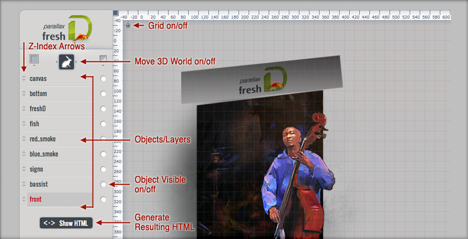
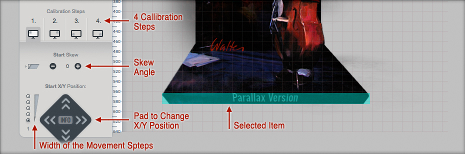

01 Starting the Editor
If you use the non minified version of our plugin you can start the editor by switching a parameter button to 'on':
<script type="text/javascript">
$(window).load(function() {
$.noConflict();
jQuery('#world').fhparallax({
editor:'on',
path:'parallax/js/ZeroClipboard.swf',
})
});
</script>
After loading the website containing the plugin you will see the editor with the components described in the next chapter.
You have to accomplish the steps from 04 Changing the Z-Index to the end twice. One time in a webbrowser (Firefox, Chrome, Opera, Safari, IE9), the other time in IE8 because this one does not play by the Standards.
02 Components
The editor shows a real time preview of your 3D world focused in the middle of your screen:

After selecting an object/layer you get this options additionally:

03 Prequesities
First slice your picture the way that you get all the seperate parts of the moving 3D World. Then put in the picture sources in the HTML in seperate DIVs like this one:
<!-- TEMPLATE LAYER ITEM -->
<div id="WRITE-YOUR-ID-HERE" class="parallax_world_class YOUR-STARTUP-ANIMATION" data-startx="0" data-endx="0" data-startx_ie8="0" data-endx_ie8="0" data-starty="0" data-endy="0" data-starty_ie8="0" data-endy_ie8="0" data-startskew="0" data-endskew="0" data-zoomxoffset="0" data-zoomxoffset_ie8="0" data-zoomxendoffset="0" data-zoomxendoffset_ie8="0">
<img src="YOUR-IMAGE-SOURCE">
</div>
Never mind the values other than the img src, the ID of the DIV (this is the name that appears in the editor) and the Startanimation. You can change everything else later on with the editor.
When designing a new 3D World take one example as boilerplate and change the image sources of that boilerplate DIVs that come as close as possible to the new 3D World.
04 Changing Z-Index
You now see all items in your in the editor as images on the right side and as layernames on the left menu side.
The item which lies on top on the right side must be the first layer on the menu side. The second layer on the menu side lies in the right side directly under the first layer on the menu side. It is not as complicated as it may sound ;) .
05 Calibration Steps
Choose one layer and another menu at the bottom pops up. Here you can change the position of it concerning the 4 fix points used in our plugin.
First set the start & end position and maybe skew angle of the Left & Right maximum position of the maximum zoom (the most nearest distance to the viewer). Then the same for the Left & Right maximum position of the minimum zoom (the most farest distance to the viewer).
From Left to Right:
Use the big pad to scroll the items in place.
Skew describes the angle of which the viewer looks on the item.
From our experience: To make a very exact animation, go 2 times through each steps. First order: 1,2,3,4 Second Time: 1,3,2,4
06 Get the Result (HTML)
Now press the "Show HTML" button and get the resulting HTML.
Copy & Paste the result to your original HTML. Meaning exchange the content of your DIV that surrounds your 3D World.
If you call your website locally you can copy the resulting and selected HTML manually. On a server you can press the "Copy to clipboard" button.